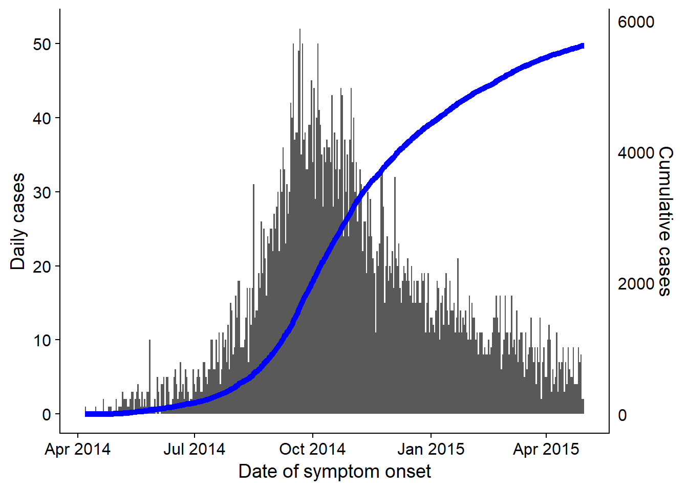
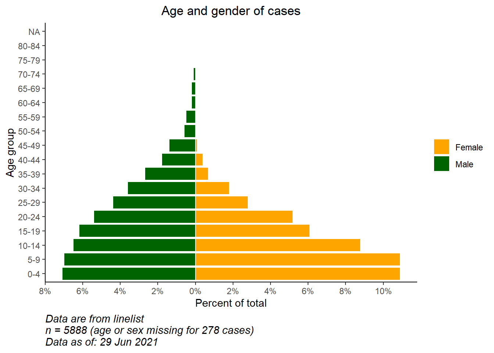

33 Demographic pyramids and Likert-scales


Demographic pyramids are useful to show distributions of age and gender. Similar code can be used to visualize the results of Likert-style survey questions (e.g. “Strongly agree”, “Agree”, “Neutral”, “Disagree”, “Strongly disagree”). In this page we cover the following:
- Fast & easy pyramids using the apyramid package
- More customizeable pyramids using
ggplot()
- Displaying “baseline” demographics in the background of the pyramid
- Using pyramid-style plots to show other types of data (e.g responses to Likert-style survey questions)
33.1 Preparation
Load packages
This code chunk shows the loading of packages required for the analyses. In this handbook we emphasize p_load() from pacman, which installs the package if necessary and loads it for use. You can also load installed packages with library() from base R. See the page on R basics for more information on R packages.
pacman::p_load(rio, # to import data
here, # to locate files
tidyverse, # to clean, handle, and plot the data (includes ggplot2 package)
apyramid, # a package dedicated to creating age pyramids
janitor, # tables and cleaning data
stringr) # working with strings for titles, captions, etc.Import data
To begin, we import the cleaned linelist of cases from a simulated Ebola epidemic. If you want to follow along, click to download the “clean” linelist (as .rds file). Import data with the import() function from the rio package (it handles many file types like .xlsx, .csv, .rds - see the Import and export page for details).
# import case linelist
linelist <- import("linelist_cleaned.rds")The first 50 rows of the linelist are displayed below.
Cleaning
To make a traditional age/gender demographic pyramid, the data must first be cleaned in the following ways:
- The gender column must be cleaned.
- Depending on your method, age should be stored as either a numeric or in an age category column.
If using age categories, the column values should be corrected ordered, either by default alpha-numeric or intentionally set by converting to class factor.
Below we use tabyl() from janitor to inspect the columns gender and age_cat5.
linelist %>%
tabyl(age_cat5, gender)## age_cat5 f m NA_
## 0-4 640 416 39
## 5-9 641 412 42
## 10-14 518 383 40
## 15-19 359 364 20
## 20-24 305 316 17
## 25-29 163 259 13
## 30-34 104 213 9
## 35-39 42 157 3
## 40-44 25 107 1
## 45-49 8 80 5
## 50-54 2 37 1
## 55-59 0 30 0
## 60-64 0 12 0
## 65-69 0 12 1
## 70-74 0 4 0
## 75-79 0 0 1
## 80-84 0 1 0
## 85+ 0 0 0
## <NA> 0 0 86We also run a quick histogram on the age column to ensure it is clean and correctly classified:
hist(linelist$age)
33.2 apyramid package
The package apyramid is a product of the R4Epis project. You can read more about this package here. It allows you to quickly make an age pyramid. For more nuanced situations, see the section below using ggplot(). You can read more about the apyramid package in its Help page by entering ?age_pyramid in your R console.
Linelist data
Using the cleaned linelist dataset, we can create an age pyramid with one simple age_pyramid() command. In this command:
- The
data =argument is set as thelinelistdata frame
- The
age_group =argument (for y-axis) is set to the name of the categorical age column (in quotes)
- The
split_by =argument (for x-axis) is set to the gender column
apyramid::age_pyramid(data = linelist,
age_group = "age_cat5",
split_by = "gender")
The pyramid can be displayed with percent of all cases on the x-axis, instead of counts, by including proportional = TRUE.
apyramid::age_pyramid(data = linelist,
age_group = "age_cat5",
split_by = "gender",
proportional = TRUE)
When using agepyramid package, if the split_by column is binary (e.g. male/female, or yes/no), then the result will appear as a pyramid. However if there are more than two values in the split_by column (not including NA), the pyramid will appears as a faceted bar plot with grey bars in the “background” indicating the range of the un-faceted data for that age group. In this case, values of split_by = will appear as labels at top of each facet panel. For example, below is what occurs if the split_by = is assigned the column hospital.
apyramid::age_pyramid(data = linelist,
age_group = "age_cat5",
split_by = "hospital") 
Missing values
Rows that have NA missing values in the split_by = or age_group = columns, if coded as NA, will not trigger the faceting shown above. By default these rows will not be shown. However you can specify that they appear, in an adjacent barplot and as a separate age group at the top, by specifying na.rm = FALSE.
apyramid::age_pyramid(data = linelist,
age_group = "age_cat5",
split_by = "gender",
na.rm = FALSE) # show patients missing age or gender
Proportions, colors, & aesthetics
By default, the bars display counts (not %), a dashed mid-line for each group is shown, and the colors are green/purple. Each of these parameters can be adjusted, as shown below:
You can also add additional ggplot() commands to the plot using the standard ggplot() “+” syntax, such as aesthetic themes and label adjustments:
apyramid::age_pyramid(
data = linelist,
age_group = "age_cat5",
split_by = "gender",
proportional = TRUE, # show percents, not counts
show_midpoint = FALSE, # remove bar mid-point line
#pal = c("orange", "purple") # can specify alt. colors here (but not labels)
)+
# additional ggplot commands
theme_minimal()+ # simplfy background
scale_fill_manual( # specify colors AND labels
values = c("orange", "purple"),
labels = c("m" = "Male", "f" = "Female"))+
labs(y = "Percent of all cases", # note x and y labs are switched
x = "Age categories",
fill = "Gender",
caption = "My data source and caption here",
title = "Title of my plot",
subtitle = "Subtitle with \n a second line...")+
theme(
legend.position = "bottom", # legend to bottom
axis.text = element_text(size = 10, face = "bold"), # fonts/sizes
axis.title = element_text(size = 12, face = "bold"))
Aggregated data
The examples above assume your data are in a linelist format, with one row per observation. If your data are already aggregated into counts by age category, you can still use the apyramid package, as shown below.
For demonstration, we aggregate the linelist data into counts by age category and gender, into a “wide” format. This will simulate as if your data were in counts to begin with. Learn more about Grouping data and Pivoting data in their respective pages.
demo_agg <- linelist %>%
count(age_cat5, gender, name = "cases") %>%
pivot_wider(
id_cols = age_cat5,
names_from = gender,
values_from = cases) %>%
rename(`missing_gender` = `NA`)…which makes the dataset looks like this: with columns for age category, and male counts, female counts, and missing counts.
To set-up these data for the age pyramid, we will pivot the data to be “long” with the pivot_longer() function from dplyr. This is because ggplot() generally prefers “long” data, and apyramid is using ggplot().
# pivot the aggregated data into long format
demo_agg_long <- demo_agg %>%
pivot_longer(
col = c(f, m, missing_gender), # cols to elongate
names_to = "gender", # name for new col of categories
values_to = "counts") %>% # name for new col of counts
mutate(
gender = na_if(gender, "missing_gender")) # convert "missing_gender" to NAThen use the split_by = and count = arguments of age_pyramid() to specify the respective columns in the data:
apyramid::age_pyramid(data = demo_agg_long,
age_group = "age_cat5",# column name for age category
split_by = "gender", # column name for gender
count = "counts") # column name for case counts
Note in the above, that the factor order of “m” and “f” is different (pyramid reversed). To adjust the order you must re-define gender in the aggregated data as a Factor and order the levels as desired. See the Factors page.
33.3 ggplot()
Using ggplot() to build your age pyramid allows for more flexibility, but requires more effort and understanding of how ggplot() works. It is also easier to accidentally make mistakes.
To use ggplot() to make demographic pyramids, you create two bar plots (one for each gender), convert the values in one plot to negative, and finally flip the x and y axes to display the bar plots vertically, their bases meeting in the plot middle.
Preparation
This approach uses the numeric age column, not the categorical column of age_cat5. So we will check to ensure the class of this column is indeed numeric.
class(linelist$age)## [1] "numeric"You could use the same logic below to build a pyramid from categorical data using geom_col() instead of geom_histogram().
Constructing the plot
First, understand that to make such a pyramid using ggplot() the approach is as follows:
Within the
ggplot(), create two histograms using the numeric age column. Create one for each of the two grouping values (in this case genders male and female). To do this, the data for each histogram are specified within their respectivegeom_histogram()commands, with the respective filters applied tolinelist.One graph will have positive count values, while the other will have its counts converted to negative values - this creates the “pyramid” with the
0value in the middle of the plot. The negative values are created using a special ggplot2 term..count..and multiplying by -1.The command
coord_flip()switches the X and Y axes, resulting in the graphs turning vertical and creating the pyramid.Lastly, the counts-axis value labels must be altered so they appear as “positive” counts on both sides of the pyramid (despite the underlying values on one side being negative).
A simple version of this, using geom_histogram(), is below:
# begin ggplot
ggplot(mapping = aes(x = age, fill = gender)) +
# female histogram
geom_histogram(data = linelist %>% filter(gender == "f"),
breaks = seq(0,85,5),
colour = "white") +
# male histogram (values converted to negative)
geom_histogram(data = linelist %>% filter(gender == "m"),
breaks = seq(0,85,5),
mapping = aes(y = ..count..*(-1)),
colour = "white") +
# flip the X and Y axes
coord_flip() +
# adjust counts-axis scale
scale_y_continuous(limits = c(-600, 900),
breaks = seq(-600,900,100),
labels = abs(seq(-600, 900, 100)))
DANGER: If the limits of your counts axis are set too low, and a counts bar exceeds them, the bar will disappear entirely or be artificially shortened! Watch for this if analyzing data which is routinely updated. Prevent it by having your count-axis limits auto-adjust to your data, as below.
There are many things you can change/add to this simple version, including:
- Auto adjust counts-axis scale to your data (avoid errors discussed in warning below)
- Manually specify colors and legend labels
Convert counts to percents
To convert counts to percents (of total), do this in your data prior to plotting. Below, we get the age-gender counts, then ungroup(), and then mutate() to create new percent columns. If you want percents by gender, skip the ungroup step.
# create dataset with proportion of total
pyramid_data <- linelist %>%
count(age_cat5,
gender,
name = "counts") %>%
ungroup() %>% # ungroup so percents are not by group
mutate(percent = round(100*(counts / sum(counts, na.rm=T)), digits = 1),
percent = case_when(
gender == "f" ~ percent,
gender == "m" ~ -percent, # convert male to negative
TRUE ~ NA_real_)) # NA val must by numeric as wellImportantly, we save the max and min values so we know what the limits of the scale should be. These will be used in the ggplot() command below.
max_per <- max(pyramid_data$percent, na.rm=T)
min_per <- min(pyramid_data$percent, na.rm=T)
max_per## [1] 10.9min_per## [1] -7.1Finally we make the ggplot() on the percent data. We specify scale_y_continuous() to extend the pre-defined lengths in each direction (positive and “negative”). We use floor() and ceiling() to round decimals the appropriate direction (down or up) for the side of the axis.
# begin ggplot
ggplot()+ # default x-axis is age in years;
# case data graph
geom_col(data = pyramid_data,
mapping = aes(
x = age_cat5,
y = percent,
fill = gender),
colour = "white")+ # white around each bar
# flip the X and Y axes to make pyramid vertical
coord_flip()+
# adjust the axes scales
# scale_x_continuous(breaks = seq(0,100,5), labels = seq(0,100,5)) +
scale_y_continuous(
limits = c(min_per, max_per),
breaks = seq(from = floor(min_per), # sequence of values, by 2s
to = ceiling(max_per),
by = 2),
labels = paste0(abs(seq(from = floor(min_per), # sequence of absolute values, by 2s, with "%"
to = ceiling(max_per),
by = 2)),
"%"))+
# designate colors and legend labels manually
scale_fill_manual(
values = c("f" = "orange",
"m" = "darkgreen"),
labels = c("Female", "Male")) +
# label values (remember X and Y flipped now)
labs(
title = "Age and gender of cases",
x = "Age group",
y = "Percent of total",
fill = NULL,
caption = stringr::str_glue("Data are from linelist \nn = {nrow(linelist)} (age or sex missing for {sum(is.na(linelist$gender) | is.na(linelist$age_years))} cases) \nData as of: {format(Sys.Date(), '%d %b %Y')}")) +
# display themes
theme(
panel.grid.major = element_blank(),
panel.grid.minor = element_blank(),
panel.background = element_blank(),
axis.line = element_line(colour = "black"),
plot.title = element_text(hjust = 0.5),
plot.caption = element_text(hjust=0, size=11, face = "italic")
)
Compare to baseline
With the flexibility of ggplot(), you can have a second layer of bars in the background that represent the “true” or “baseline” population pyramid. This can provide a nice visualization to compare the observed with the baseline.
Import and view the population data (see Download handbook and data page):
# import the population demographics data
pop <- rio::import("country_demographics.csv")First some data management steps:
Here we record the order of age categories that we want to appear. Due to some quirks the way the ggplot() is implemented, in this specific scenario it is easiest to store these as a character vector and use them later in the plotting function.
# record correct age cat levels
age_levels <- c("0-4","5-9", "10-14", "15-19", "20-24",
"25-29","30-34", "35-39", "40-44", "45-49",
"50-54", "55-59", "60-64", "65-69", "70-74",
"75-79", "80-84", "85+")Combine the population and case data through the dplyr function bind_rows():
- First, ensure they have the exact same column names, age categories values, and gender values
- Make them have the same data structure: columns of age category, gender, counts, and percent of total
- Bind them together, one on-top of the other (
bind_rows())
# create/transform populaton data, with percent of total
########################################################
pop_data <- pop %>%
pivot_longer( # pivot gender columns longer
cols = c(m, f),
names_to = "gender",
values_to = "counts") %>%
mutate(
percent = round(100*(counts / sum(counts, na.rm=T)),1), # % of total
percent = case_when(
gender == "f" ~ percent,
gender == "m" ~ -percent, # if male, convert % to negative
TRUE ~ NA_real_))Review the changed population dataset
Now implement the same for the case linelist. Slightly different because it begins with case-rows, not counts.
# create case data by age/gender, with percent of total
#######################################################
case_data <- linelist %>%
count(age_cat5, gender, name = "counts") %>% # counts by age-gender groups
ungroup() %>%
mutate(
percent = round(100*(counts / sum(counts, na.rm=T)),1), # calculate % of total for age-gender groups
percent = case_when( # convert % to negative if male
gender == "f" ~ percent,
gender == "m" ~ -percent,
TRUE ~ NA_real_))Review the changed case dataset
Now the two data frames are combined, one on top of the other (they have the same column names). We can “name” each of the data frame, and use the .id = argument to create a new column “data_source” that will indicate which data frame each row originated from. We can use this column to filter in the ggplot().
# combine case and population data (same column names, age_cat values, and gender values)
pyramid_data <- bind_rows("cases" = case_data, "population" = pop_data, .id = "data_source")Store the maximum and minimum percent values, used in the plotting function to define the extent of the plot (and not cut short any bars!)
# Define extent of percent axis, used for plot limits
max_per <- max(pyramid_data$percent, na.rm=T)
min_per <- min(pyramid_data$percent, na.rm=T)Now the plot is made with ggplot():
- One bar graph of population data (wider, more transparent bars)
- One bar graph of case data (small, more solid bars)
# begin ggplot
##############
ggplot()+ # default x-axis is age in years;
# population data graph
geom_col(
data = pyramid_data %>% filter(data_source == "population"),
mapping = aes(
x = age_cat5,
y = percent,
fill = gender),
colour = "black", # black color around bars
alpha = 0.2, # more transparent
width = 1)+ # full width
# case data graph
geom_col(
data = pyramid_data %>% filter(data_source == "cases"),
mapping = aes(
x = age_cat5, # age categories as original X axis
y = percent, # % as original Y-axis
fill = gender), # fill of bars by gender
colour = "black", # black color around bars
alpha = 1, # not transparent
width = 0.3)+ # half width
# flip the X and Y axes to make pyramid vertical
coord_flip()+
# manually ensure that age-axis is ordered correctly
scale_x_discrete(limits = age_levels)+ # defined in chunk above
# set percent-axis
scale_y_continuous(
limits = c(min_per, max_per), # min and max defined above
breaks = seq(floor(min_per), ceiling(max_per), by = 2), # from min% to max% by 2
labels = paste0( # for the labels, paste together...
abs(seq(floor(min_per), ceiling(max_per), by = 2)), "%"))+
# designate colors and legend labels manually
scale_fill_manual(
values = c("f" = "orange", # assign colors to values in the data
"m" = "darkgreen"),
labels = c("f" = "Female",
"m"= "Male"), # change labels that appear in legend, note order
) +
# plot labels, titles, caption
labs(
title = "Case age and gender distribution,\nas compared to baseline population",
subtitle = "",
x = "Age category",
y = "Percent of total",
fill = NULL,
caption = stringr::str_glue("Cases shown on top of country demographic baseline\nCase data are from linelist, n = {nrow(linelist)}\nAge or gender missing for {sum(is.na(linelist$gender) | is.na(linelist$age_years))} cases\nCase data as of: {format(max(linelist$date_onset, na.rm=T), '%d %b %Y')}")) +
# optional aesthetic themes
theme(
legend.position = "bottom", # move legend to bottom
panel.grid.major = element_blank(),
panel.grid.minor = element_blank(),
panel.background = element_blank(),
axis.line = element_line(colour = "black"),
plot.title = element_text(hjust = 0),
plot.caption = element_text(hjust=0, size=11, face = "italic"))
33.4 Likert scale
The techniques used to make a population pyramid with ggplot() can also be used to make plots of Likert-scale survey data.
Import the data (see Download handbook and data page if desired).
# import the likert survey response data
likert_data <- rio::import("likert_data.csv")Start with data that looks like this, with a categorical classification of each respondent (status) and their answers to 8 questions on a 4-point Likert-type scale (“Very poor”, “Poor”, “Good”, “Very good”).
First, some data management steps:
- Pivot the data longer
- Create new column
directiondepending on whether response was generally “positive” or “negative”
- Set the Factor level order for the
statuscolumn and theResponsecolumn
- Store the max count value so limits of plot are appropriate
melted <- likert_data %>%
pivot_longer(
cols = Q1:Q8,
names_to = "Question",
values_to = "Response") %>%
mutate(
direction = case_when(
Response %in% c("Poor","Very Poor") ~ "Negative",
Response %in% c("Good", "Very Good") ~ "Positive",
TRUE ~ "Unknown"),
status = fct_relevel(status, "Junior", "Intermediate", "Senior"),
# must reverse 'Very Poor' and 'Poor' for ordering to work
Response = fct_relevel(Response, "Very Good", "Good", "Very Poor", "Poor"))
# get largest value for scale limits
melted_max <- melted %>%
count(status, Question) %>% # get counts
pull(n) %>% # column 'n'
max(na.rm=T) # get maxNow make the plot. As in the age pyramids above, we are creating two bar plots and inverting the values of one of them to negative.
We use geom_bar() because our data are one row per observation, not aggregated counts. We use the special ggplot2 term ..count.. in one of the bar plots to invert the values negative (*-1), and we set position = "stack" so the values stack on top of each other.
# make plot
ggplot()+
# bar graph of the "negative" responses
geom_bar(
data = melted %>% filter(direction == "Negative"),
mapping = aes(
x = status,
y = ..count..*(-1), # counts inverted to negative
fill = Response),
color = "black",
closed = "left",
position = "stack")+
# bar graph of the "positive responses
geom_bar(
data = melted %>% filter(direction == "Positive"),
mapping = aes(
x = status,
fill = Response),
colour = "black",
closed = "left",
position = "stack")+
# flip the X and Y axes
coord_flip()+
# Black vertical line at 0
geom_hline(yintercept = 0, color = "black", size=1)+
# convert labels to all positive numbers
scale_y_continuous(
# limits of the x-axis scale
limits = c(-ceiling(melted_max/10)*11, # seq from neg to pos by 10, edges rounded outward to nearest 5
ceiling(melted_max/10)*10),
# values of the x-axis scale
breaks = seq(from = -ceiling(melted_max/10)*10,
to = ceiling(melted_max/10)*10,
by = 10),
# labels of the x-axis scale
labels = abs(unique(c(seq(-ceiling(melted_max/10)*10, 0, 10),
seq(0, ceiling(melted_max/10)*10, 10))))) +
# color scales manually assigned
scale_fill_manual(
values = c("Very Good" = "green4", # assigns colors
"Good" = "green3",
"Poor" = "yellow",
"Very Poor" = "red3"),
breaks = c("Very Good", "Good", "Poor", "Very Poor"))+ # orders the legend
# facet the entire plot so each question is a sub-plot
facet_wrap( ~ Question, ncol = 3)+
# labels, titles, caption
labs(
title = str_glue("Likert-style responses\nn = {nrow(likert_data)}"),
x = "Respondent status",
y = "Number of responses",
fill = "")+
# display adjustments
theme_minimal()+
theme(axis.text = element_text(size = 12),
axis.title = element_text(size = 14, face = "bold"),
strip.text = element_text(size = 14, face = "bold"), # facet sub-titles
plot.title = element_text(size = 20, face = "bold"),
panel.background = element_rect(fill = NA, color = "black")) # black box around each facet